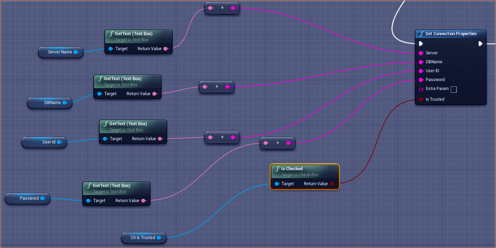

The function Set Connection Properties takes the necessary parameters that your server is going to need , and request for the connection to be established.
| Inputs |
Description |
| Server |
This parameter takes your server address. |
| DBName |
This parameter takes the name of your database. |
| UserID |
This parameter takes your login ID. |
| Password |
This parameter takes your login Password. |
| Extra Param |
This parameter takes any extra setting that you might want to add. All individual settings should be seperated by semicolon and passed as a single string. |
| Is Trusted |
If you are using Windows Authentication Mode , you can check this, and you do not need to enter your User ID and password in that case. Otherwise, uncheck this paramter. |

A connection string typically looks like:
Server=myServerAddress;Database=myDataBase;User Id=myUsername;Password=myPassword;
So if your connectionstring consists of extra parameters , apart from the usual parameters included in the Set Connection Properties function(Server , DBName , UserID , Password , IsTrusted) ,
you can enter those extra parameters in the Extra Param input, seperated by a semicolon. For example , if your connectionstring is something like :
Server=myServerAddress;Database=myDataBase;Uid=myUsername;Pwd=myPassword;Protocol=pipe;PipeName=mypipename;
Then you need to enter , in your Extra Param input :
Protocol=pipe;PipeName=mypipename;
It must be noted here that you can obviously enter the extra parameters in other inputs as well, like in your Server input , you can also write like this :
myServerAddress;Protocol=pipe;PipeName=mypipename;
But it is recommended to use Extra Param input for this purpose, just to avoid confusion.
To learn about various types of Connection String and forming the one that best suits your requirement, you can refer here : https://www.connectionstrings.com/mysql/
Once your connection has been established, you need to periodically listen to the function Check Connection State to find out the current state of your connection.
An useful way to do that in Blueprints is using Gates, which is called in Tick function , but is opened after Set Connection Properties is called.
| Connection State |
Description |
| Broken |
The connection to the data source is broken. |
| Closed |
The connection is closed. |
| Connecting |
The connection object is connecting to the data source. |
| Executing |
The connection object is executing a command. |
| Fetching |
The connection object is retrieving data. |
| Open |
The connection is open. |
As long as the current state shows Connecting, you can execute other operations, and let the connection happen in the background. When you get current state as Open, this means connection is successfully established ,
and now you can proceed with executing queries in your database.